International Finance¶
Ch1 Balance of Payment¶
國際收支表¶
- 金融帳 FA (financial account)
- \(\Delta\) 金融性資產
- 國外金融資產淨額 NFA (net foreign asset) \(B_t=a^f_t-a^h_t\)
- \(a^f\) = 本國居民持有國外金融資產
- \(a^h\) = 外國居民持有本國金融資產
- \(FA_t=-(B_{t+1}-B_t)\)
- NFA 增加 -> 逆超
- 官方準備帳 ORA (official reserve account)
- \(\Delta\) 國外資產/外匯存底 foreign exchange reserves
- \(ORA=-(H_{t+1}-H_t)\)
- \(H\) = 央行持有國外資產
- 經常帳 CA (current account)
- sum of
- imports and exports of goods and services \(X_t-M_t\)
- investment income \(X_{FS,t}-M_{FS,t}\)
- unilateral transfers \(UT_{IN,t}-UT_{OUT,t}\)
- directly giving/receiving money to/from foreign citizens
- \(CA_t=TB_t+NFI_t\)
- 貿易帳 trade account \(TB_t=X_t-M_t\)
- 國外所得淨額 \(NFI_t=(X_{FS,t}-M_{FS,t})+(UT_{IN,t}-UT_{OUT,t})\)
- sum of
- 資本帳 KA (capital account)
Assuming \(KA=0\), if \(CA>0\)
- 央行不干預 \(\rightarrow ORA=0 \rightarrow FA=-CA<0\)
- 央行小干預 \(\rightarrow 0<-ORA<CA \rightarrow FA=-CA-ORA<0\)
- 央行大干預 \(\rightarrow 0<CA<-ORA \rightarrow FA=-CA-ORA>0\)
When \(KA=0\)
- \(CA+FA+ORA=0\)
- \(CA=-FA-ORA=(B_{t+1}-B_t)+(H_{t+1}-H_t)\)
- 民間國外資產變動 + 官方國外資產變動
Formulas¶
See Macroeconomics#支出面 & Macroeconomics#國民儲蓄 national saving
- NFI = net foreign income
- CA = current account
- fiscal deficit is when \(T-G<0\)
So a bigger fiscal deficit leads to smaller current account
Problems¶
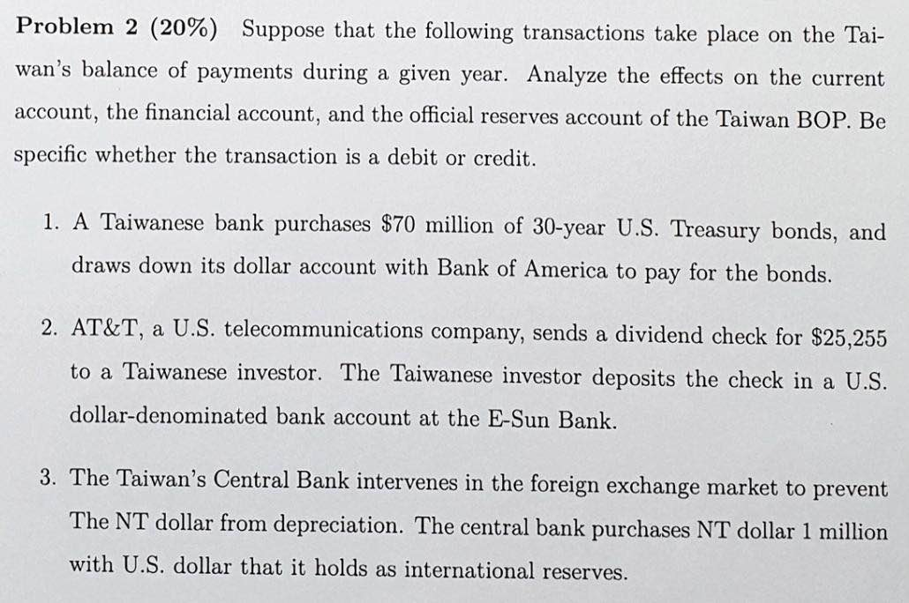
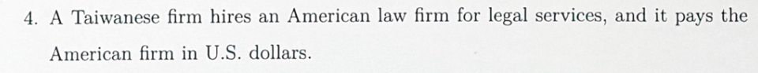
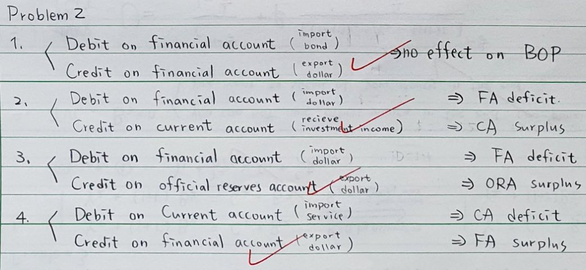
Ch2 Intertemporal Models of Current Account Dynamics¶
two-period endowment model¶
See also Macroeconomics#費雪兩期模型
Notations
- \(Y\) = endowment
- \(C\) = consumption
- \(r\) = interest rate
- \(\beta\) = time preference factor
Equilibrium¶
Problem formulation
First order condition
We know
So
It's also called the Euler equation
current account¶
Assume there's no 央行 so
In 2-period model \(B_1=B_3=0\)
只有兩期 so 一二期 current account 順替差相抵
Assume \(u(C)=\ln C\)
We know
- \(u'(C_1)=\beta u'(C_2)(1+r)\)
- \(C_1+\dfrac{C_2}{1+r}=Y_1+\dfrac{Y_2}{1+r}\)
So
- \(C_2=\beta C_1(1+r)\)
- \((1+\beta)C_1=Y_1+\dfrac{Y_2}{1+r}\)
- \(C_1=\dfrac{1}{1+\beta}(Y_1+\dfrac{Y_2}{1+r})\)
- \(C_1\) is a function of lifetime wealth -> fit Macroeconomics#恆常所得假說 permanent income
- MPC (marginal propensity to consume) = \(\dfrac{dC_1}{dY_1}=\dfrac{1}{1+\beta}\)
- \(C_2=\dfrac{\beta}{1+\beta}(1+r)(Y_1+\dfrac{Y_2}{1+r})\)
- \(CA_1=Y_1-C_1=\dfrac{\beta}{1+\beta}Y_1-\dfrac{1}{(1+\beta)(1+r)}Y_2\)
- \(\dfrac{dCA_1}{dY_1}=\dfrac{\beta}{1+\beta}>0\) meaning CA is pro-cyclical
Autarky¶
At \(r=r^A\) there's no incentive to borrow or lend
\(r\) & \(\rho\)¶
If \(r=\rho\)
- \(\beta=\dfrac{1}{1+\rho}=\dfrac{1}{1+r}\)
- \(u'(C_1)=\beta u'(C_2)(1+r)=u'(C_2)\)
- \(C_1=C_2=\dfrac{1+r}{2+r}(Y_1+\dfrac{Y_2}{1+r})\)
- \(CA=Y_1-C_1=\dfrac{1}{2+r}(Y_1-Y_2)\)
- \(Y_1>Y_2\) -> current account 順差
- vice versa
- if 所得恆常性增加 \(dY_1=dY_2\), then \(CA\) not changed
- if 只有當其所得增加 \(dY_1>0\) & \(dY_2=0\), then \(CA\) 增加
- vice versa
- \(Y_1>Y_2\) -> current account 順差
If \(\rho>r\) and \(Y_1=Y_2=Y\)
- \(\beta=\dfrac{1}{1+\rho}<\dfrac{1}{1+r}\)
- \(u'(C_1)=\beta u'(C_2)(1+r)<u'(C_2)\)
- \(C_1>C_2\)
- \(C_1+\dfrac{C_1}{1+r}>C_2+\dfrac{C_2}{1+r}=Y+\dfrac{Y}{1+r}\)
- \(C_1>Y\)
- \(CA_1=Y-C_1<0\)
Vice versa, if \(\rho<r\) and \(Y_1=Y_2=Y\), \(CA_1>0\)
two-period endowment model with government purchases¶
budget constraint
lifetime wealth
assume \(r=\rho\)
- 政府支出恆常性變動 \(dG_1=dG_2\) won't affect current account
- 政府支出短暫變動 \(dG_1>dG_2=0\) decreases current account
two-period model with production & investment¶
- \(A_t\) = total factor productivity (TFP)
- \(F\) is concave
- \(F'>0\)
- \(F''<0\)
- \(K\) = capital
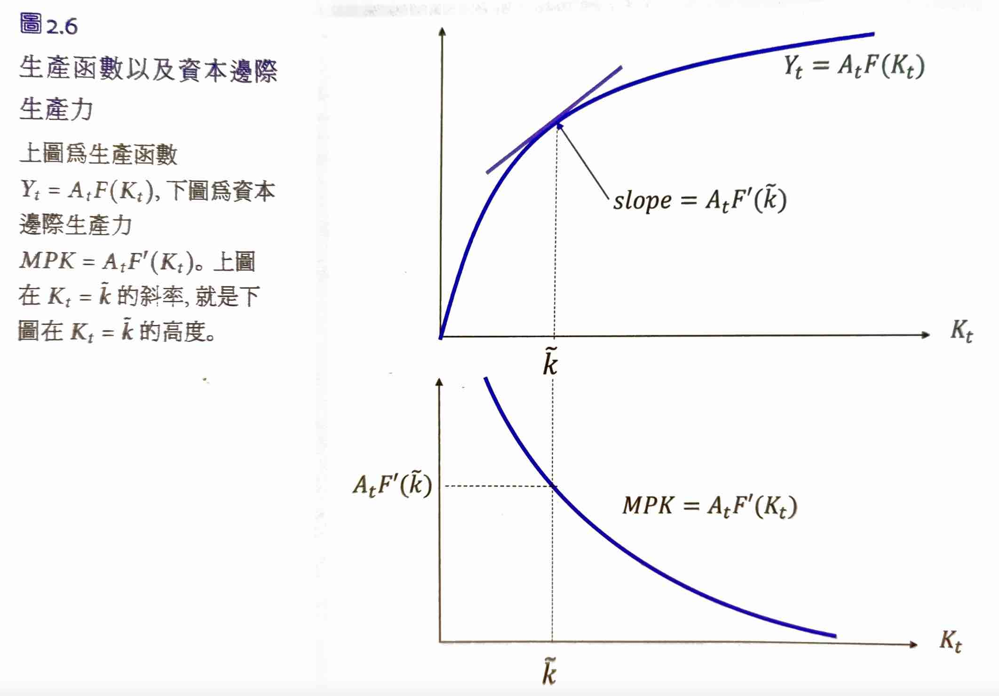
law of motion for capital
\(\delta\) = 折舊率 depreciation rate
budget constraint
\(K_1>0\), \(K_3=0\)
period 1
period 2
combined
optimization problem
replace \(C_2\) with the function of \(C_1\), now we can get 2 first-order condition by partial \(C_1\) & partial \(K_2\)
partial \(C_1\)
partial \(K_2\)
Now we know
since \(F''(K_2)<0\), \(K_2\) increases when
- \(A_2\) increases
- \(\delta\) decreases
- \(r\) decreases
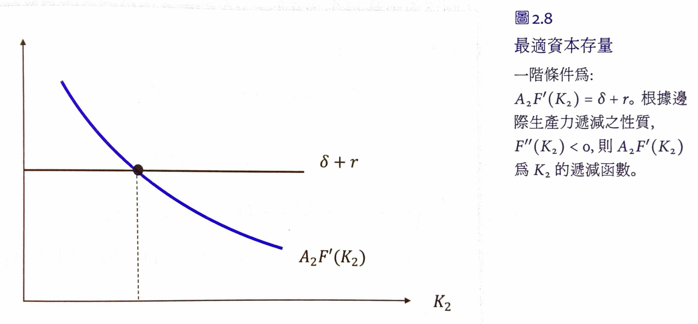
Assume \(r=\rho\)
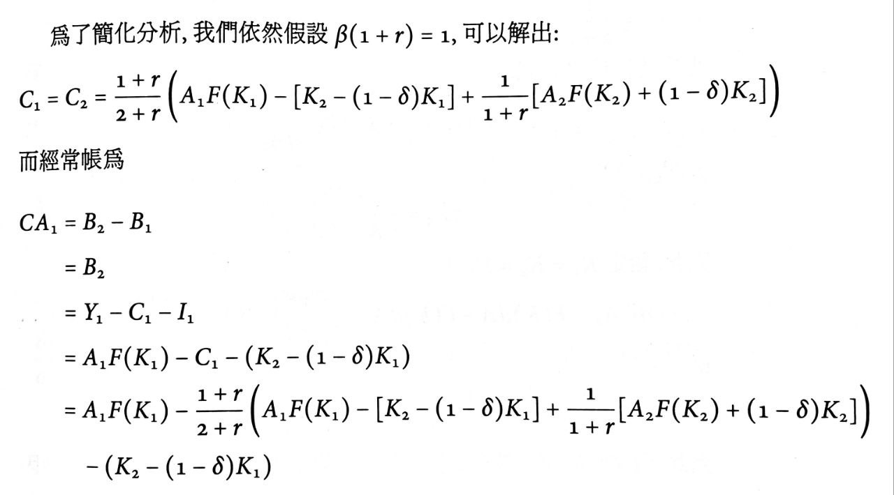
Assume \(K_1=K_2=K\)
If 恆常正向技術衝擊 \(dA_1=dA_2=dA>0\)
- \(\dfrac{dCA_1}{dA}=-\dfrac{F'(K_2)}{A_2F''(K_2)}dA<0\)
- 當期投資增加 -> current account 減少
If 短暫正向技術衝擊 \(dA_1>dA_2=0\)
- \(\dfrac{dCA_1}{dA_1}>0\)
- 當期產出增加 > 當期消費增加 -> current account 增加
If 預期未來正向技術衝擊 \(dA_2>dA_1=0\)
- \(\dfrac{dCA_2}{dA_2}=-\dfrac{dC_1}{dA_2}-\dfrac{dI_1}{dA_2}=<0\)
- 當期投資 & 消費增加 -> current account 減少
Infinite Horizon Intertemporal Current Account Model¶
first-order condition
no-ponzi-game condition
but no need B in the final period so
橫截條件 transversality condition
lifetime budget constraint
Assuming the growth rate of endowment = \(g\) i.e. \(Y_{t+1}=g\cdot Y_t\), then
So \(g<r\) otherwise the sum of endowment will be infinite, which is meaningless
Assume \(r=\rho\) and \(Y_{t+1}=g\cdot Y_t\)
Meaning if a country keeps growing with the rate of \(g\), there will be an ever-growing current account deficit
The proportion of debt to income will never become 0, explained below
Assume \(\gamma_t=\gamma_{t+1}=\bar{\gamma}\)
Ch3 Uncertainty and Current Account¶
risk aversion¶
absolute risk aversion = \(-\dfrac{u''(C)}{u'(C)}\)
relative risk aversion = \(-\dfrac{u''(C)C}{u'(C)}\)
two-period endowment model with uncertainty¶
當期確定
下一期不確定
lifetime
according to 當期資訊的 expected 下期 consumption
optimization problem
Knowing \(C^{H/L}_2=\text{something}-(1+r)C_1\), we can get the first order condition -> stochastic Euler function
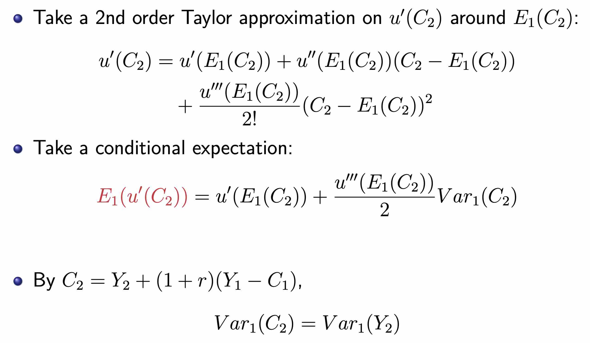
謹小慎微 prudence
when \(u'(\cdot)\) is convex i.e. \(u''<0\) & \(u'''>0\)
if \(u'''>0\), then \(C_1<C^{CE}_1\) -> reduce consumption, do precautionary saving
CE = certainty equivalent i.e. having the same expected value as the risk combination but without risk
A prudent person will have a higher saving i.e. current account when facing uncertainty
Simplistic example
- \(u(C)=ln C\)
- \(E(C_2)=\dfrac{1}{2}((C_1-a)+(C_1+a))=C_1\)
- \(u'(C_1)=\dfrac{1}{C_1}<\dfrac{1}{2}(u'(C_1-a)+u'(C_1+a))=\dfrac{C_1}{(C_1-a)(C_1+a)}\)
- so by moving a bit of \(C_1\) to \(C_2\), your utility will increase, meaning there is an incentive for precautionary saving
facing normal distribution¶
Assume
- \(u(C)=-e^{-aC}, a<0\)
- a prudent utility function
- \(Y_2\) is a normal distribution
- \(C_2=Y_2+(1+r)(Y_1-C_1)\)
- \(C_2\) is also a normal distribution
stochastic Euler function
Assume \(r=\rho\)
We know if \(X\) is a normal distribution, then \(E(e^{bX})=e^{\mu b+\frac{1}{2}\sigma^2b^2}\), so
lifetime budget constraint
take expected value
no variance for certainty equivalent
precautionary saving
two-period endowment model with production & investment with uncertainty¶
If \(A_2\) & \(u'(C_2)\) are independent, then \(K_2=K^{CE}_2\)
If \(Cov_1(A_2, C_2)>0\) -> \(Cov_1(A_2, u'(C_2))<0\), then \(K_2<K^{CE}_2\) i.e. reduce investment
current account¶
When there is uncertainty in period 2, \(C_1<C^{CE}_1\) & \(K_2<K^{CE}_2\), meaning a bigger current account
Ch4 Foreign Exchange Market Intro¶
quotes¶
direct quotes
1 unit of foreign currency -> ? units of home currency
American quotes \(S^{US/F}\) = direct quotes for USD
indirect quotes
1 unit of home currency -> ? units of foreign currency
European quotes \(S^{F/US}\) = indirect quotes for USD
cross rate
cross rate = a quote not involving USD but 2 other currencies
triangular arbitrage
if A/C = A/B x B/C then there's not triangular arbitrage
外匯交易類型¶
market type
- spot market 現貨市場
- <= 2d 交割
- uses spot rate 即期匯率
- normally 匯率 refers to spot rate
- forward market 遠期外匯市場
- at a specific future date
price
- bid price 買價
- the price the bank buys at
- ask price 賣價
- the price the bank sells at
- bid-ask spread = ask price - bid price
- factors affecting bid-ask spread
- cost
- smaller 交易 cost -> smaller bid-ask spread
- risk
- higher risk -> larger bid-ask spread
- market thickness
- smaller market -> less liquidity -> higher risk -> larger bid-ask spread
- cost
匯率變動¶
匯率
foreign currency appreciates -> \(S_t\) up
匯率變動
e.g. 1 foreign = 20 home -> 1 foreign = 30 home, then foreign currency appreciation rate = 50%
Note that foreign currency appreciation rate != home currency depreciation rate. We can use log-difference to solve this problem.
first-order Taylor approximation
given \(\log(1+g_t)\approx g_t\)
continuously compounded rate
\(g_{t+1}\) = foreign currency appreciation rate in a year, \(d_{t+1}\) = continuously compounded rate in a year
If we divide a year into \(n\) period for compounded rate
\(S_{t+1}=S_t\left[1+\left(\dfrac{d_{t+1}}{n}\right)^n\right]\)
We know \(\lim_{n\rightarrow\infty}\left[1+\left(\dfrac{d_{t+1}}{n}\right)^n\right]=e^{d_{t+1}}\)
So
multilateral exchange rate¶
geometric weighted average of exchange rate to multiple currencies, with weight = trade amount
EER effective exchange rate i.e. multilateral exchange rate
- \(\dfrac{1}{S_i}\) = indirect quote to country \(i\)
- \(w_i\) = ratio of trade to country \(i\) to total trade amount
average change rate
有效匯率指數=\(\dfrac{EER_t}{EER_0}\times 100\)
- EER at period t / EER at base period
- up when NTD appreciates against a basket
foreign exchange derivatives¶
- forwards 遠期外匯
- trade in the future
- can't be traded in secondary market
- swaps 換匯交易
- a contract to trade now and trade back later
- futures 外匯期貨
- trade in the future
- can be traded in secondary market
- options 外匯選擇權
- an option to trade in the future
foreign exchange reserves¶
official international reserves includes
- foreign exchange reserves
- gold reserves
- IMF-related reserve assets
- Taiwan's not in IMF so not for Taiwan
optimal foreign exchange reserves
- 3-6 months of import
- 100% short term debt
- 20% M2
However, Taiwan's foreign exchange reserves >> the optimal point
Before 1987, Taiwan's private banks are forbidden to have foreign exchange, so they're all sold to the central bank.
Ch5 Exchange rate¶
exchange rate regime¶
how central banks control the exchange rate
theoretical¶
- free floating
- zero intervention
- managed floating
- dirty floating
- central bank intervenes frequently
- fixed rate
- fixed to a big currency e.g. USD EUR or a basket of currencies
de facto¶
IMF's report
- hard pegs
- no separate legal tender
- use a major currency as its own
- called Dollarization if use USD
- currency board
- fixed exchange rate to a major currency
- no separate legal tender
- soft pegs
- conventional peg
- target at a currency or a basket
- stabilized arrangement
- within 2% of change within 6 months
- TW probably this
- crawling peg
- constant rate of change
- crawl-like arrangement
- within 2% of change in the rate of change
- pegged exchange rate within horizontal bands
- target at a zone
- conventional peg
- floating regime
- floating
- intervene only to slow down the rate of change
- free floating
- almost never intervene
- floating
equilibrium¶
the foreign exchange market of USD, direct quote (TWD/USD) vs. quantity
- supply from exporters
- sell and get USD
- demand from importers
- need USD to pay
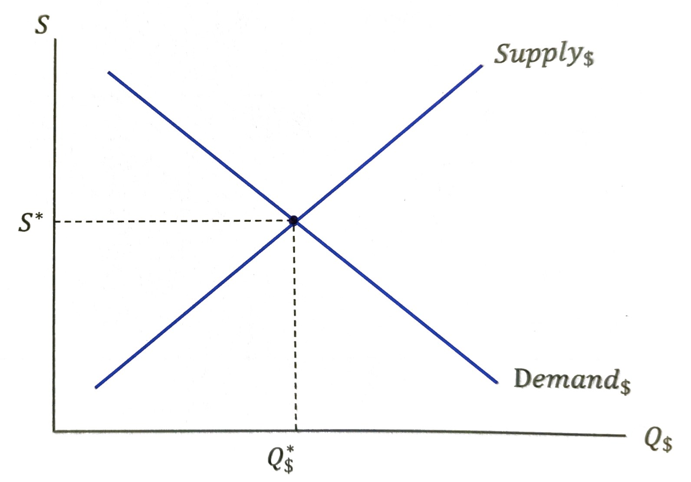
free floating¶
export up -> supply shifts right -> S down i.e. TWD appreciates
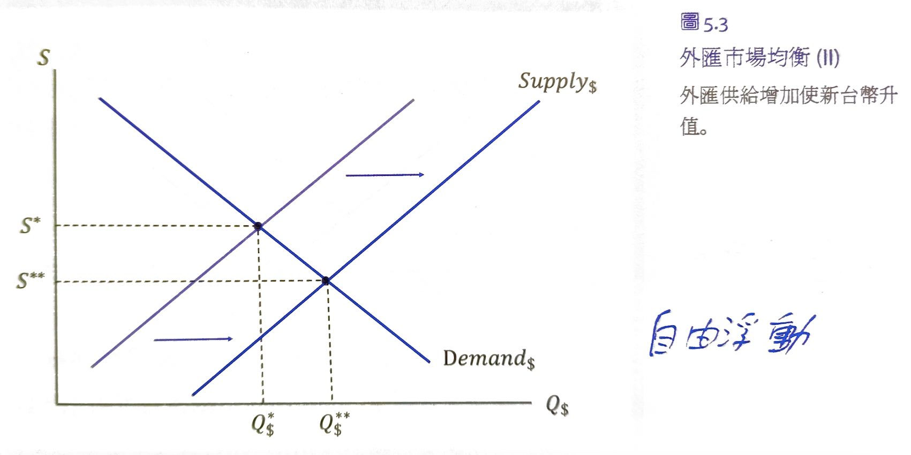
fixed rate¶
export up -> supply shifts right -> central bank intercepts by buying \((Q^{***}-Q^*)\) of USD -> demand shifts right -> S unchanged
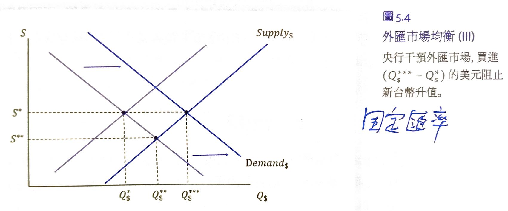
managed floating¶
export up -> supply shifts right -> central bank buys some USD -> demand shifts right a bit -> S reduced a bit
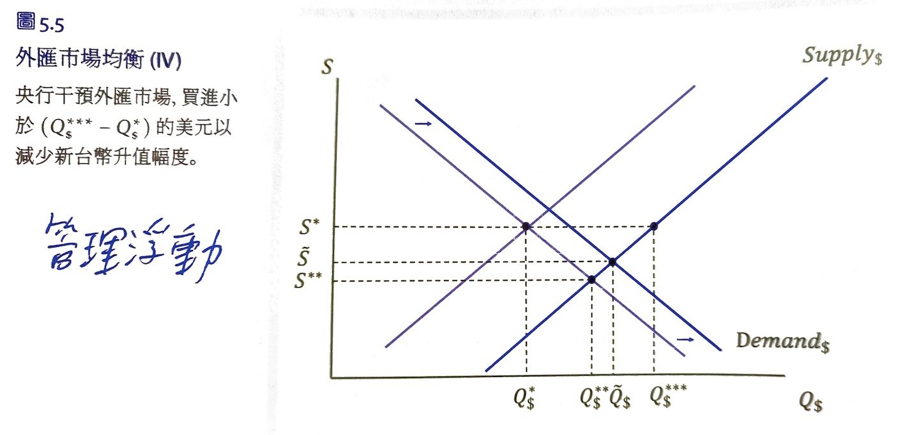
risk of exchange rate¶
Since exchange rate is a random walk, there is risk in transactions involving different currencies.
without random shocks
with random shocks
where \(\epsilon_{jt}=\rho_j\epsilon_{jt-1}+v_{jt}\), \(\rho_j\) is a constant, \(v_{jt}\sim^{i.i.d.}(0,\sigma_j^2)\), \(j=1,2,3\)
\(\epsilon_{1t}\), \(\epsilon_{2t}\), and \(\epsilon_{3t}\) are random processes, making \(S_t\) a random process as well
time series analytics¶
logrithmic difference
Given Taylor approximation, when \(\Delta y_t\) is small
base period normalization
Set a base period and normalize all values with base period being 100 for ease of comparison.
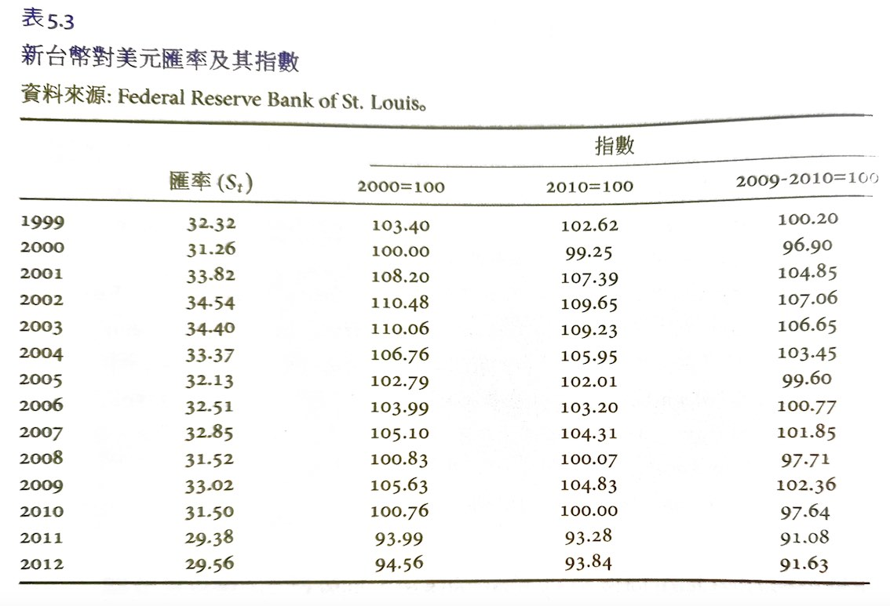
2009-2010 means using mean of 2009 & 2010 as 100
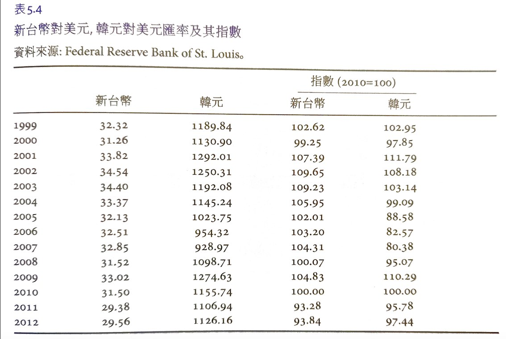
empirical analysis¶
exchange rate change \(r_t\)
PDF of \(r_t\) of GBP vs. USD
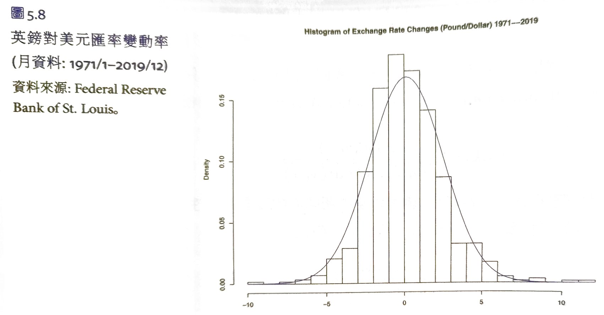
In emerging market countries, however, \(r_t\) is not a normal distribution.
PDF of \(r_t\) of MXN vs. USD is right-skewed, meaning the probability of depreciation is higher.
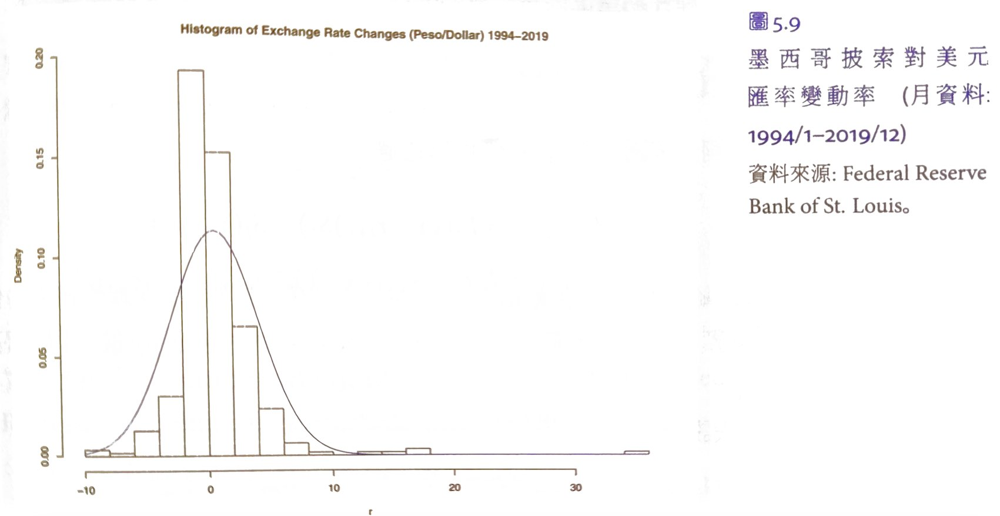
expected exchange rate¶
\(X_{jt}\) are variables effecting the foreign exchange market
hedge¶
Can use forward exchange contract to eliminate risk: a contract to buy/sell X foreign currency at the exchange rate \(F\) in the future. See #Ch6 Covered Interest Rate Parity for in depth analysis.
Example
A TW form will get 1M USD a year later. Given current exchange rate = 29.5 TWD/USD, USD interest rate = 6%, TWD interest rate = 10%, what will the forward exchange contract be?
So the firm should have a contract to sell 1M USD at 30.61 TWD/USD a year later.
If the actual exchange rate turns out to be 31 TWD/USD, then the firm loses.
Ch6 Covered Interest Rate Parity¶
forward premium¶
forward premium = how much forward exchange rate stray away from current one
annualized percentage of forward premium of k days = \(fp_{t,k}\dfrac{360}{k}\) (most use 360 days as a year)
covered interest rate parity, CIP¶
the equilibrium price of forward exchange rate
- \(i_t\) = k-day interest rate of home country
- \(i_t^*\) = k-day interest rate of foreign country
- \(S_t\) current exchange rate H/F
- \(F_{t,k}\) = k-day forward exchange rate H/F
otherwise there will be opportunity for arbitrage
i.e. forward premium = interest rate spread between the the home & foreign country
There will be forward premium when foreign country has a lower interest rate and discount if higher.
empirical study of CIP¶
If CIP is correct, then \(\alpha=0\) & \(\beta=1\)
Regression result:
- null hypothesis of \(\alpha=0\) is rejected
- null hypothesis of \(\beta=1\) can't be rejected
\(\alpha \neq 0\) can be explained by
- transaction costs of arbitrage
- default risk
- contract may turn out to be unfulfilled
- exchange controls
- cannot freely do arbitrage
- political risk
- same as exchange controls
forward exchange rate¶
- \(F_t(n)\) = n-year foward exchange rate H/F
- \(i_t\) = 1-year interest rate of home country
- \(i_t^*\) = 1-year interest rate of foreign country
- \(S_t\) current exchange rate H/F
home n-year bonds & exchange -> foreign n-year bonds -> exchange back should have the same reward
problems¶
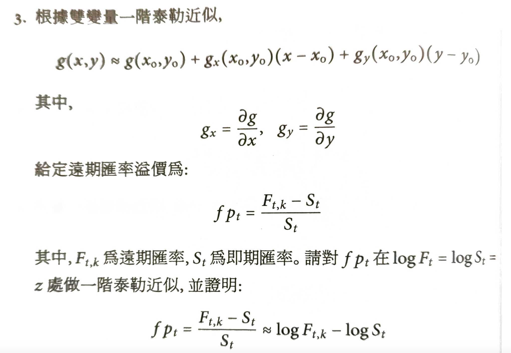
Ch7 Foreign Exchange Market Risk¶
FRU & UIP¶
forward rate unbiasedness (FRU) hypothesis
foward exchange rate = expected future exchange rate
the mean of prediction error = 0
Siegel paradox
so FRU can't be true for both home & foreign currency at the same time
However, the disparity isn't very significant, as it still holds Taylor approximation#first-order.
uncovered interest rate parity, UIP
expected return of home asset = that of foreign asset
Didn't actually buy/sell in forward exchange market to avoid risk so it's "uncovered".
if home interest rate > foreign interest rate, then foreign currency is expected to appreciate
empirical study of FRU & UIP¶
They are not true according to empirical data.
It's because foreign investment involves future exchange rate which contains risk, and investors are not risk-neutral, while home investment is risk-free.
CAPM¶
capital asset pricing model, CAPM
risk premium of risky assets
- \(R_m\) = rate of return of market portfolio, a combination of large and well-diversified investment
- \(R_i\) = rate of return of an individual asset
- \(r_f\) = risk-free rate of return i.e. rate of return on risk-free assets
The higher the \(\beta\), the higher the risk premium
For UIP
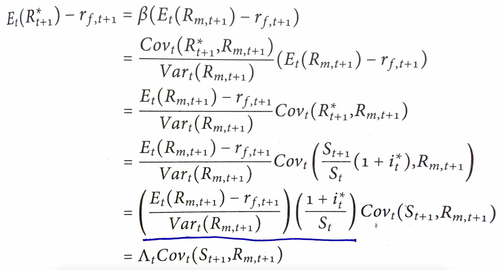
the risk premium of foreign asset is dependent on the covariance of future exchange rate & market rate of return
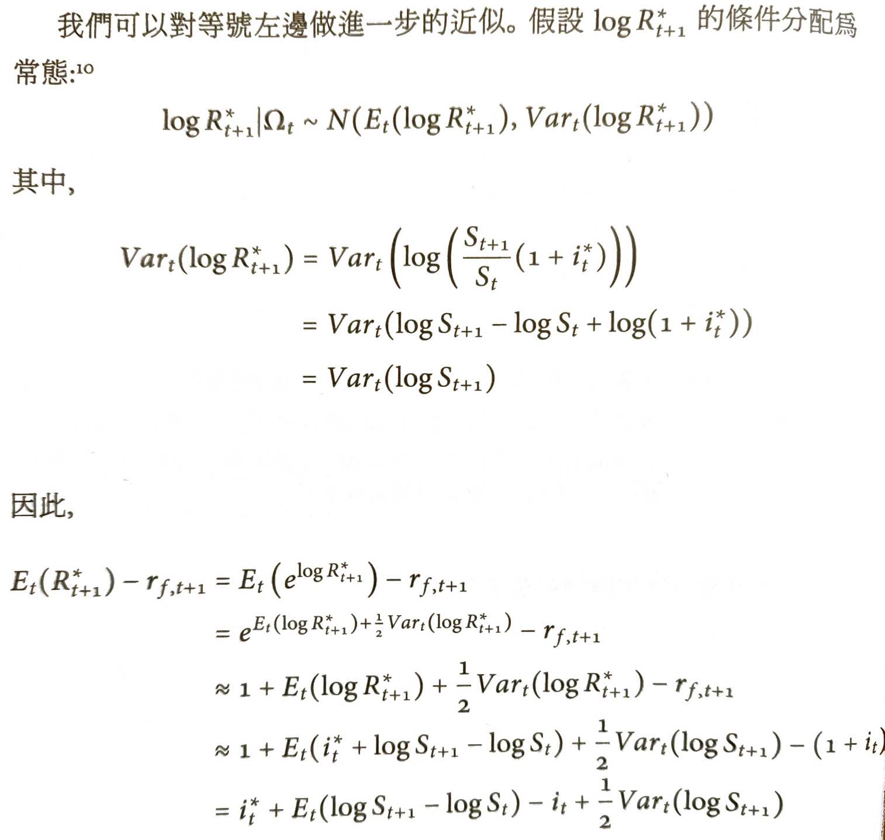
UIP with risk premium
- \(\Lambda_tCov(S_{t+1},R_{m,t+1})\) = marginal risk of CAPM
- \(-\dfrac{1}{2}Var_t(\log S_{t+1})\) = Jensen's Inequality adjustment
CCAPM¶
consumption capital asset pricing model, CCAPM
Assuming
- 2 periods
- small open economy
- home bonds \(B\) of interest rate \(i\)
- foreign bonds of interest rate \(i^*\) (in foreign currency)
- \(B^*\) with forward exchange contract to exchange back to home currency at \(F\)
- \(\tilde{B^*}\) w/o forward exchange contract
- \(B_1=B^*_1=\tilde{B}^*_1=0\)
- \(B_3=B^*_3=\tilde{B}^*_3=0\)
- product
- consumption quantity \(C_t\)
- price \(P_t\)
- endowment \(Y_t\)
- \(Y_1\) at period 1
- 2 possibilities in period 2
- \(Y^H_2\) with probability \(\pi\)
- \(Y^L_2\) with probability \(1-\pi\)
budget constraint
we can rewrite them to make \(C_1,C^H_2,C^L_2\) dependent on \(B_2,B^*_2,\tilde{B}^*_2\)
lifetime utility optimization problem
Can get 3 first-order equations by partial against \(B_2,B^*_2,\tilde{B}^*_2\)
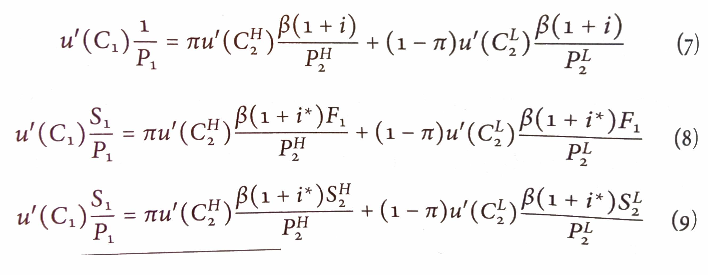
from (7)
where \(M_2\) is pricing kernel
from (8)
meaning
which is #covered interest rate parity, CIP
from (9)
meaning
when \(Cov_1(S_2,M_2)\) = 0, \(F_1=E_1[S_2]\) and \((1+i)=(1+i^*)\dfrac{E_1[S_2]}{S_1}\) i.e. #FRU & UIP is true
risk premium of foreign asset \(\rho\)
if \(Cov_1(S_2,M_2)<0\): \(C_2\) down -> \(u'(C_2)\) up -> \(M_2\) up -> \(S_2\) down i.e. home currency appreciates -> foreign asset return down, so risk premium \(\rho>0\) naturally as it contains higher risk
other explanations of UIP being wrong¶
- investors are not rational
- Peso problem
- investors also consider the possibility of black swan events, which the real data we run regression on do not contain these kind of events
- foreign exchange market is not efficient
- big investors are efficient but small ones are not
problems¶
P4¶
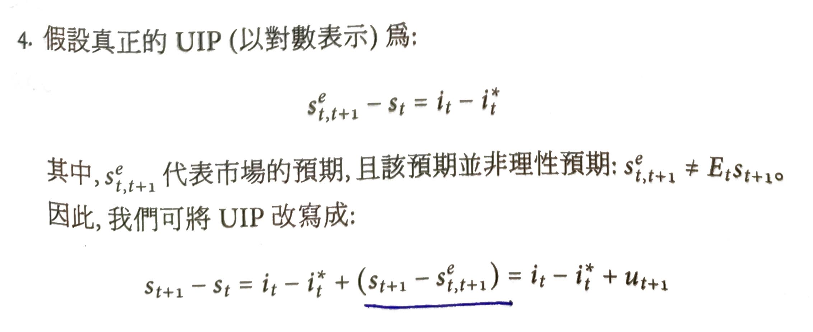
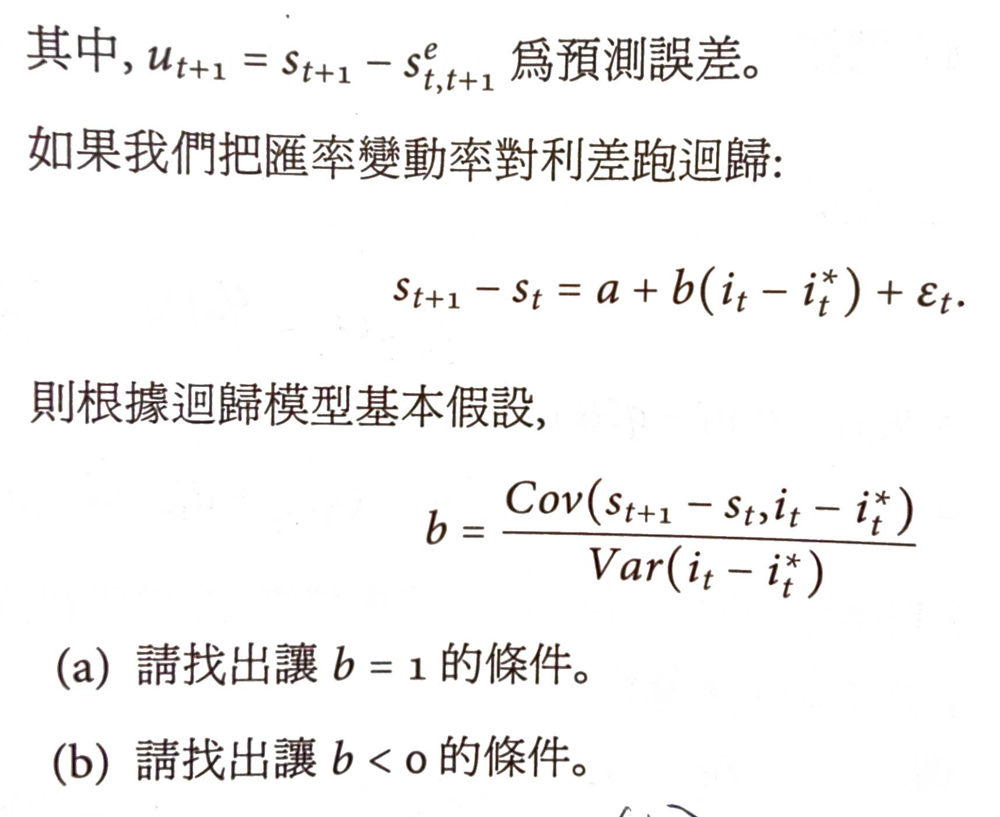
(a)
- \(A=i_t-i^*_t\)
- \(B=u_{t+1}\)
- \(s_{t+1}-s_t=A+B\)
- \(Cov(x,y)=E[xy]-E[x]E[y]\)
- \(Var(x)=E[x^2]-E[x]^2\)
For \(b=1\), \(Cov(A+B,B)=Var(A)\)
So if \(Cov(A,B)=Cov(i_t-i^*_t,u_{t+1})=0\), \(b=1\)
(b)
For \(b<0\), \(Cov(A+B,B)=Var(A)+Cov(A,B)<0\)
So \(Cov(A,B)=Cov(i_t-i^*_t,u_{t+1})<-Var(a)=-Var(i_t-i^*_t)\)
2019-P4¶
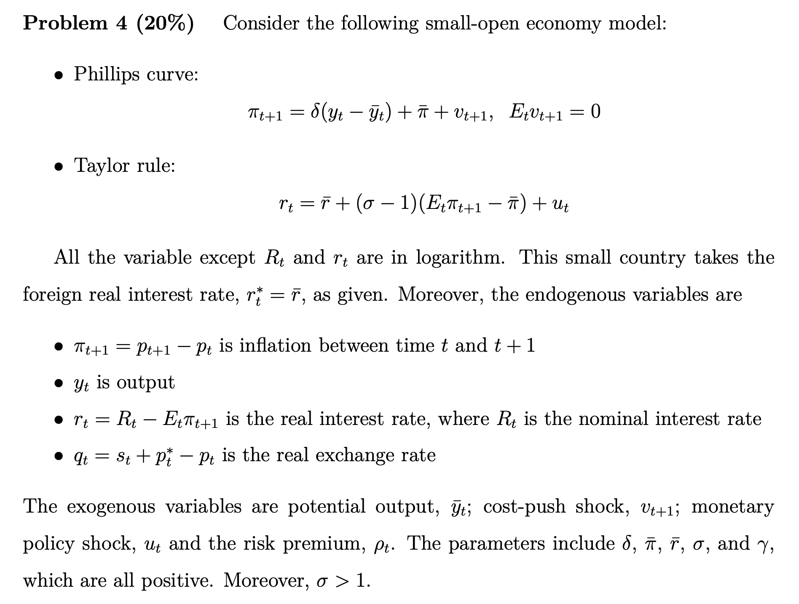
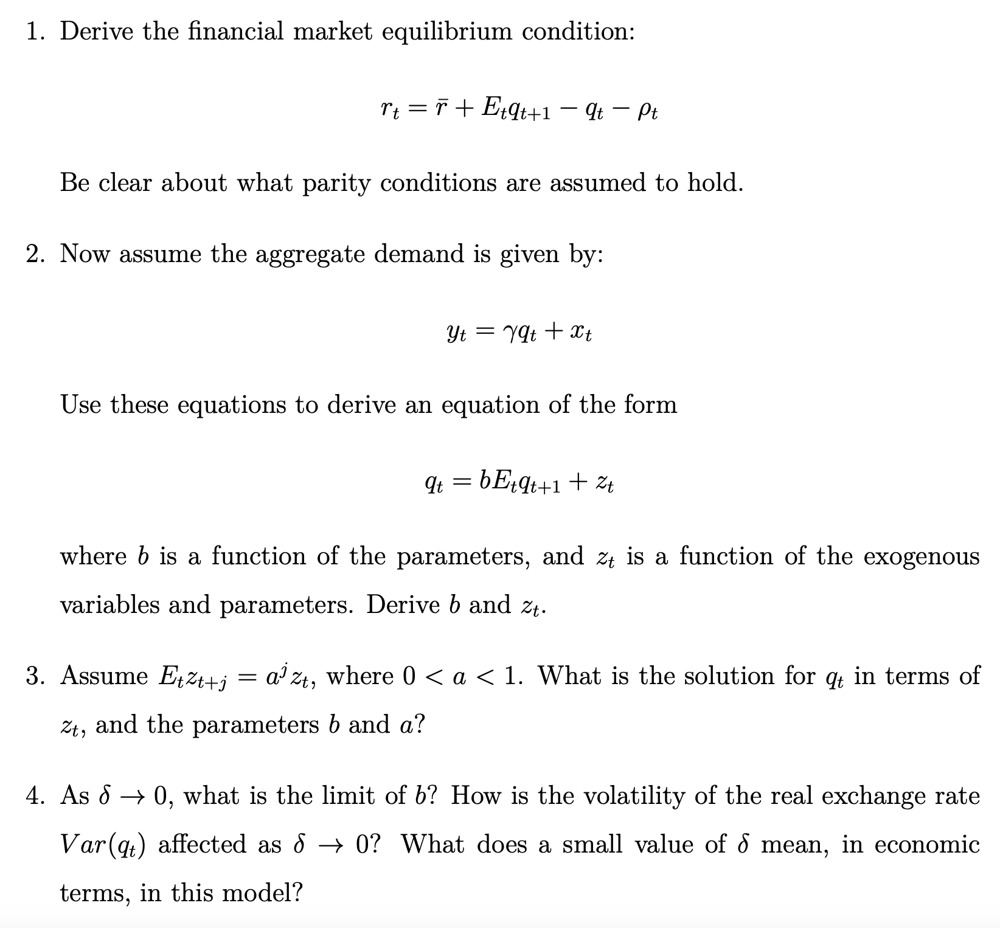
2021-P11¶
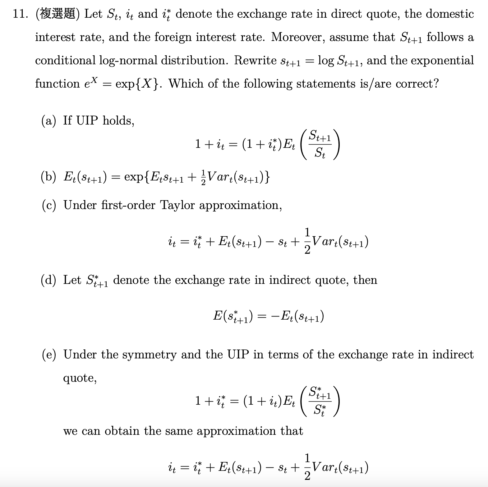
Ch8 Purchasing Power Parity, PPP¶
real exchange rate¶
real exchange rate \(Q_t\) = the ratio between the purchasing power of home & foreign country
If you can buy \(1\) big mac in the foreign country, you can \(Q_t\) big mac in the home country.
absolute PPP¶
weighted sum of price of a typical bundle of consumption goods
- purchasing power of home currency = \(\dfrac{1}{P_t}\)
- purchasing power of foreign currency = \(\dfrac{1}{P^*_t}\)
- purchasing power of home currency at foreign country = \(\dfrac{1}{S_t}\dfrac{1}{P^*_t}\)
PPP exchange rate = exchange rate to make home currency having the same purchasing power in home & foreign country
under absolute PPP, \(S_t=S^{PPP}_t=\dfrac{P_t}{P^*_t}\)
if they're not equal, then there is opportunity for arbitrage
law of one price¶
a product should have the same price in a currency in every country
This typically holds for precious metal, raw materials, luxury goods, etc., but not for general goods & services. Some reasons:
- tariffs
- international transaction cost
- transportation cost
- long-term contracts
- pricing to market
- some firms have some extents of monopoly power
- Principle of Macroeconomics#Sticky-Price Theory
- border effect
empirical study of absolute PPP¶
- it holds for developing countries with big inflations, but not for developed countries with low inflations
- in free floating regimes, the general trends follow absolute PPP
Why does it not hold
- same reasons as why #law of one price doesn't hold
- the bundle in different countries may not be the same
- the weight of the goods in the bundle in different countries may not be the same
relative PPP¶
there's a constant ratio between the purchasing power of two countries, which is the #real exchange rate
meaning the change of foreign exchange rate = the difference of inflation rate
It does not hold in short term, but does in long term.
PPP application¶
how much a currency is overvalued of undervalued
Big Mac Index
It's good because
- big mac is a homogeneous product
- it uses local ingredient providers, reduces transportation cost
- it's sold in 120 countries